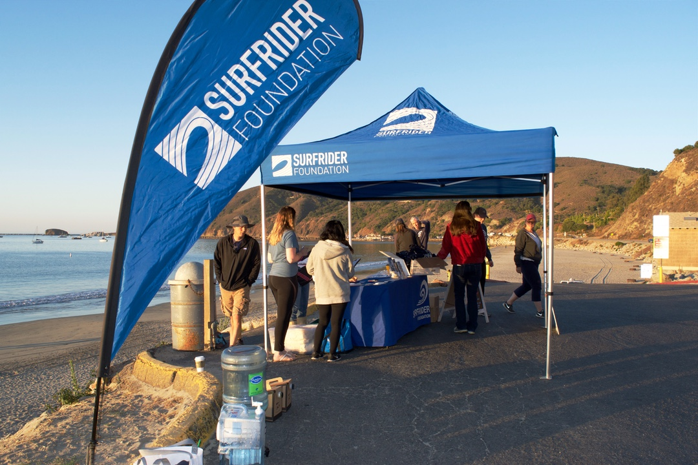
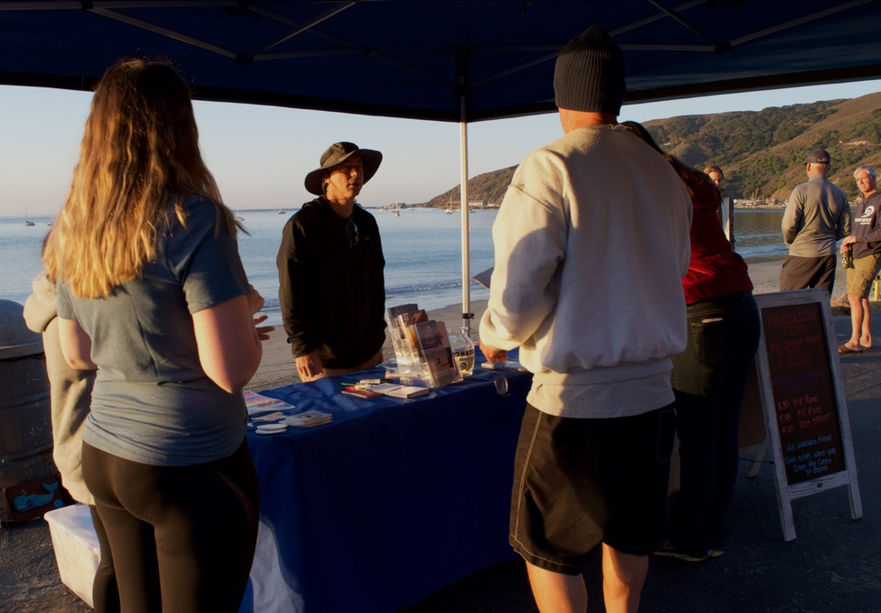
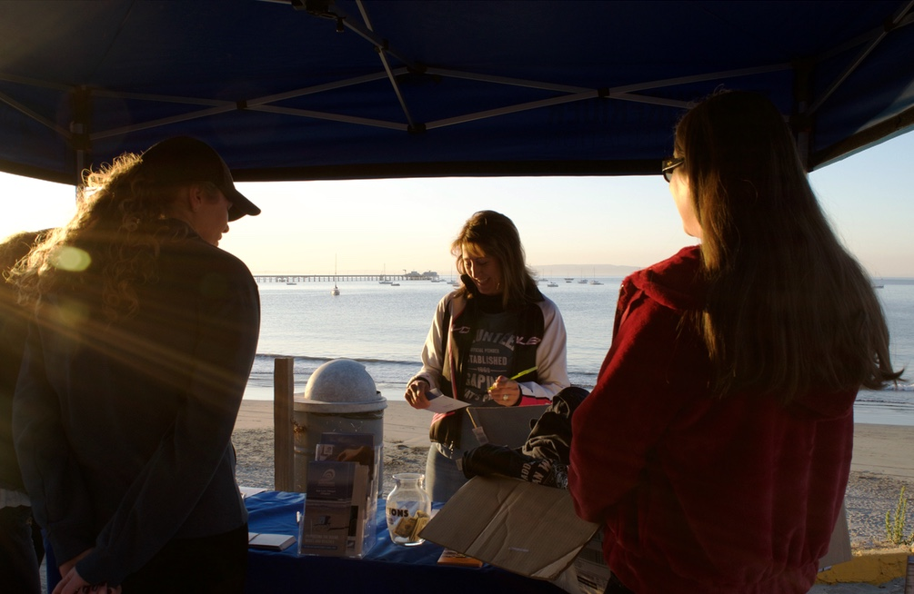
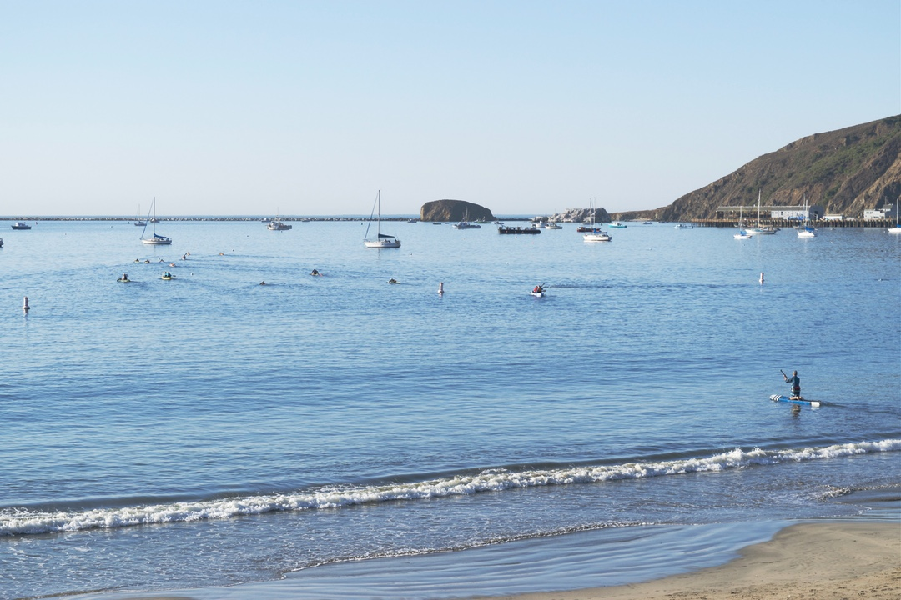
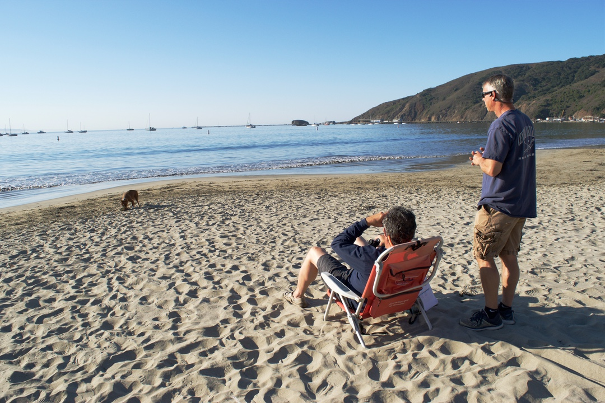
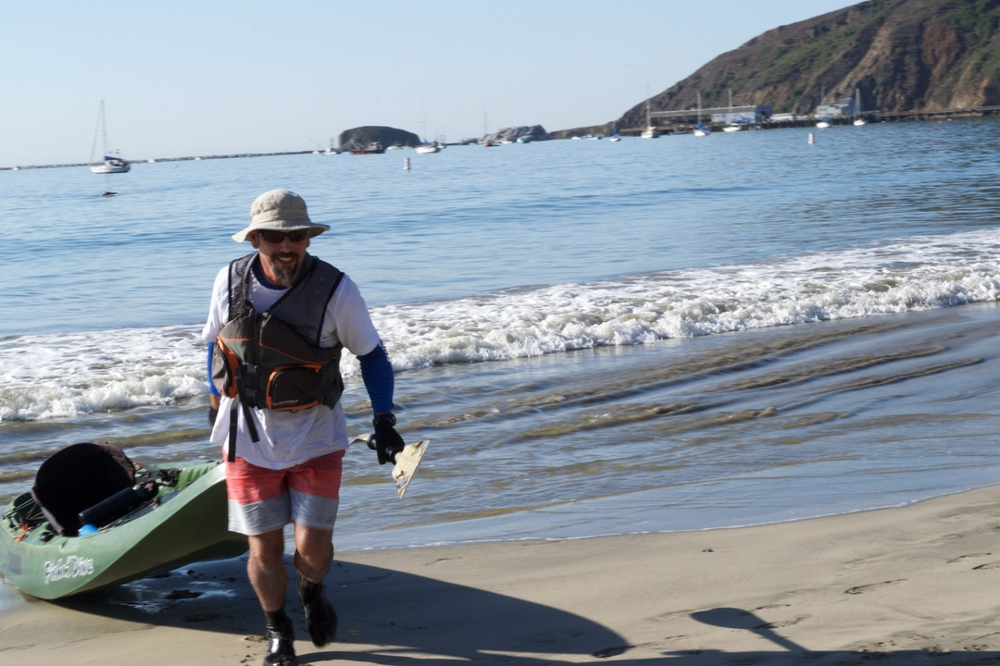

25th Annual Paddle for Clean Water
Surfrider SLO holds fundraising event
1 / 11

The San Luis Obispo (SLO) chapter of Surfrider, a national organization dedicated to protecting the coastline, spent the early morning hours of Saturday Oct.12 gearing up for their 25th annual Paddle for Clean Water event at Olde Port Beach in Avila. This event is of great significance to the local chapter, since it was this event that provided the seed money for Surfrider SLO 25 years ago. The event was first held for Ken Harmount, a former Morro Bay lifeguard, to pay for his medical bills after he became paralyzed in a snowboarding accident. Instead of using the money for himself, Harmount used it to start a local Surfrider chapter. “Our chapter was born out of Ken Harmount’s generosity,” said Brad Snook the Chairman of Surfrider’s SLO chapter.
2 / 11

Tom Reilly from Central Coast Kayaks held an early morning briefing for volunteers before the event. Reilly said he has been involved with Surf Rider since 2001 as the liaison between the Kayak shop and the local chapter. As a long-time volunteer, Reilly is passionate about Surf Rider and the Paddle for Clean Water event in particular. “The reason why I do it is I am a paddler,” said Reilly. “ I’m passionate about being on the water [and] helping people get on the water. This event is fun and it is a great way of bringing the paddling community together.”
3 / 11

Volunteer Marcia Frank registers the first few participants for that morning's event with a smile despite the early hour. To participate, paddlers paid a price of $40 for non-members and $30 for Surfrider members.
4 / 11

Around 8 am, cars hauling kayaks, surfboards, and paddleboards arrived in Avila. Participants chatted as they prepared to paddle. Paddlers ranged from novices to experts. Trampas Costello (not pictured), a long-time friend of Harmount, said he hadn’t used his kayak since last year's event.
5 / 11

The event was supposed to have three different courses a 10-kilometer, a 5-kilometer and a much shorter children’s course. This year, however, no children participated, leaving just two events.
6 / 11

This year had a light turn out, with around 15 paddlers. Reilly identified sluggish marketing as the reasoning and said he expects the event's participation to increase in the next few years. According to Snook, in previous years the event has had as many as 45 participants.
7 / 11

Surfrider volunteer John Capela was entrusted with timing the paddlers. He and Reilly patiently awaited the first returners for 45 minutes, using binoculars to keep tabs on participants as they paddled miles away from shore.
8 / 11

Costello was the first to return from the five-kilometer paddle. Though Costello identifies as a surfer, he decided to kayak for Saturday’s event. “I’m a reluctant paddler. I can surf but I know nothing about kayaking,” said Costello, “I’m a reluctant participant, but it’s a great cause, for Surfrider and it’s in Ken Harmount’s name, so that’s kinda why I do it.” Costello met Harmount in 1987, before Harmount's accident, when they lived at the same apartment complex. He said Harmount and him became good friends and that Harmount got him into surfing.
9 / 11

Snook was breathless and smiling as he returned to shore. He was greeted by Reilly who was waiting on the shore.
10 / 11

Costello, Snook, and Tim and Sue Miers discussed the course moments after the Miers’ made it to shore. The four were the only participants in the 5-kilometer race. Costello, who has done the long course the past couple years, called the 5-kilometer a blast.
11 / 11

Matt Rodenberger was the first to arrive back to shore after completing the lengthy 10-kilometer course. With a time of an hour and 17 minutes, Rodenberger was not far behind those participating in the shorter race despite paddling double the distance.